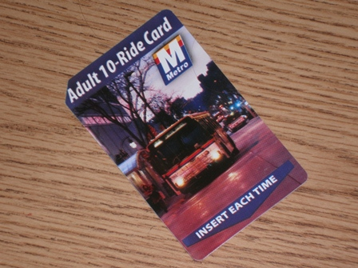

This open letter comes from the Madison Area Bus Advocates and is addressed to Mayor Paul Soglin, Dane County Executive Joe Parisi, and Al Matano, chair of the Madison Area Transportation Planning Board (the local MPO). It responds to a recent proposal to increase bus fares. The Transit and Parking Commission will hold a public hearing on the issue Wednesday, Nov. 7 at 6 p.m. in room 201 of the City-County Building.
Gentlemen:
Please work together to ensure that the proposed fare increase does not have to occur. You all support the creation of a Regional Transit Authority, which is currently being blocked by the Joint Finance Committee of the Wisconsin Legislature. In the interim, until sanity returns to state government, we implore you to put on your creative hats and find a way to maintain our current Metro fare structure. The Madison Area Bus Advocates offer the following concepts for you to consider as a starting point for the collective solution we all expect from you:
- The County does now and will in the future benefit significantly from Metro transit service;
- from a proposed transit extension to the Dane County Airport;
- from a proposed enhancement of Route 13 service to the Alliant Energy Center, where county employees
could Park & Ride to county employment centers in the downtown;
- from service to the Dane County Courthouse;
- from county human service agencies locating facilities inside Madison so as to have accessibility to public transportation;
- from county human service agencies using Metro paratransit services.
- The Transportation Planning Board (the federally designated Metropolitan Planning Organization for the
Madison Area) may have access to discretionary transportation funds which could be allocated to selected
components of the Metro budget
- for capital projects, including support for bus maintenance facilities and bus fleet purchases;
- for demonstration projects, possibly including service to the Owl Creek neighborhood or other innovative transit service concepts.

As far as cutting current transit services, we consider this only to be a last resort, after all options for increased revenue are explored. We do not support the "slow death" of transit through some attrition program. Instead, like you, we want to make transit service available throughout the Madison Area in response to growing user needs, energy prices and environmental concerns associated with total reliance on private auto transportation.
Thank you in advance for the job we know you can do to address this situation.
 Madison Area Bus Advocates
Madison Area Bus Advocates